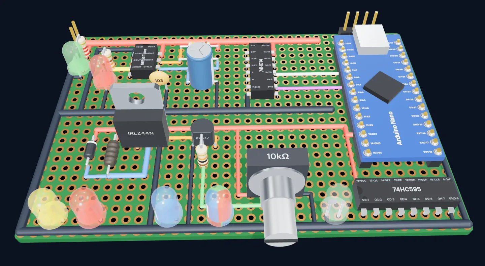
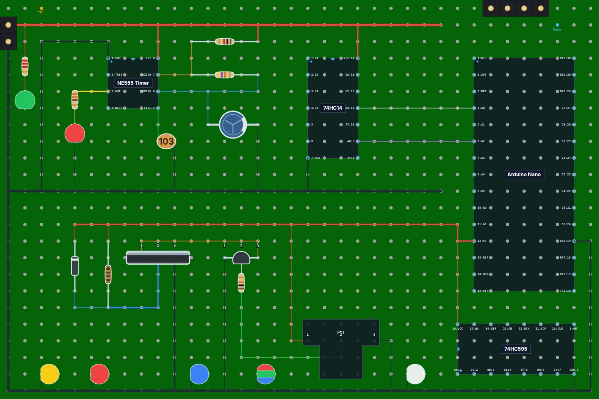
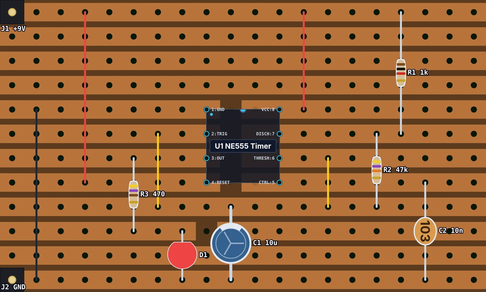
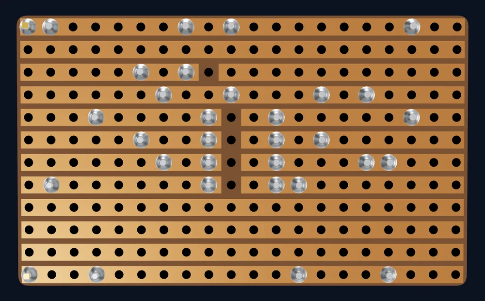
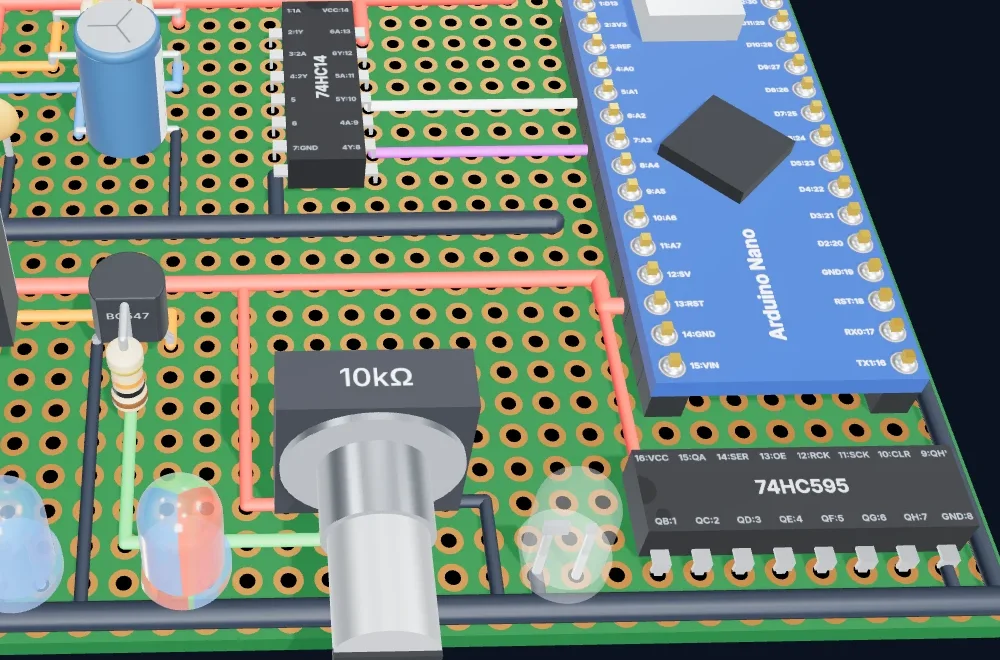

Real component library
Resistors with color bands worked out from their value, ceramic and electrolytic capacitors, inductors, diodes, colored LEDs, transistors, MOSFETs, potentiometers and header pins.
Free · Open source · No sign-up
Perfboard Designer is an online layout tool for perfboard (protoboard) and stripboard (Veroboard) projects. Place resistors, capacitors, LEDs, transistors, ICs and wires on a virtual hole grid, cut the strips where you need them, see how everything fits, and catch mistakes before they cost you a desoldering session.
Runs in your browser. Nothing to install, nothing uploaded.


Made for makers, students and hobbyists who want a plan before picking up the soldering iron.
Resistors with color bands worked out from their value, ceramic and electrolytic capacitors, inductors, diodes, colored LEDs, transistors, MOSFETs, potentiometers and header pins.
Drop in an NE555 timer, DIP-14 and DIP-16 logic chips, an ATmega328P or an Arduino Nano, or build your own chip with labeled pins and edit it later.
Draw jumper wires in any color and three thicknesses. Straight runs of the same color merge into a single wire automatically.
Lay out on a perfboard or a stripboard, start from a preset or set your own grid size to match the board on your bench, then zoom, pan and go fullscreen while you work.
Keep your progress in the browser, download the design as a project file to share or reopen later, or export the board as a PNG image.
Undo and redo, keyboard shortcuts, notes on any hole, and part names and values (R1 10k) shown right on the board.
New · Stripboard
Switch any layout between Perfboard and Stripboard with one click. On a stripboard the copper strips run along every row, so parts on the same strip are already connected. Use the Cut tool to break a strip at a hole, for example under a DIP chip so its two rows of pins don't short.


New
One click on 3D View turns your layout into a 3D model of the finished board: resistors with their color bands, ICs with labeled pins, LEDs, capacitors, transistors, pots, headers and every jumper wire, sitting on a perfboard or stripboard sized to match yours.

Choose perfboard or stripboard, then a preset or the number of holes across and down to match the board on your bench.
Click to drop components onto the holes, rotate chips, and draw wires between pins.
Save the project file, export an image to keep next to your soldering iron, and build with confidence.
Yes. It's completely free and open source, with no account, ads or limits.
No. It runs in any modern web browser. It works best on a desktop or laptop with a mouse.
On your own device. "Save Project to Browser" keeps your work in this browser, and "Save Project to File" downloads a project file you can reopen or share later. Nothing is uploaded to a server.
Yes. Switch the board to Stripboard and copper strips run along every row or column. Use the Cut tool to cut a strip at any hole; the cuts are saved with your project and shown on the copper side of the 3D view.
Yes. The custom IC editor lets you set the size and label every pin, and you can edit a custom chip again after creating it.
No. Perfboard Designer is a layout planner: it helps you work out where parts and wires go on the board. It doesn't simulate circuits or check them electrically.
Please do! Bug reports, ideas and pull requests are welcome on GitHub. See the contributors who already helped.
Open the designer and lay out your first board in a few minutes.
Open the designer →